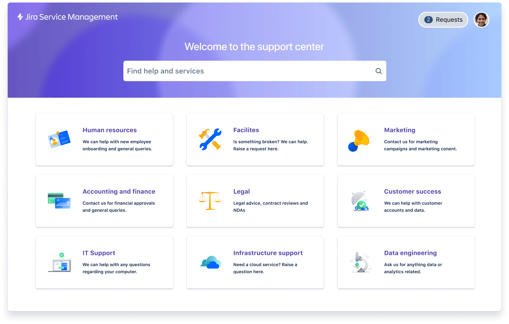

IT & service management
Connect IT, operations, and business teams with flexible service management workflows that help teams respond faster, stay aligned, and deliver reliable customer experiences.
Learn more about IT service management 
